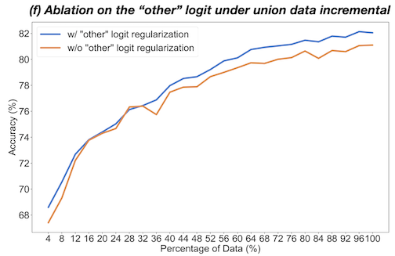

We present SuperGaussian, a novel method that repurposes
existing video upsampling methods for the 3D superresolution task. SuperGaussian can handle various input types such as NeRFs, Gaussian
Splats, reconstructions obtained from noisy scans, models that are generated by recent text-to-3D methods, or
low-poly meshes. SuperGaussian generates high resolution 3D
outputs with rich geometric and texture details in the form of Gaussian Splats.
Abstract
We propose an approach for anytime continual learning (AnytimeCL) for open vocabulary image classification. The AnytimeCL problem aims to break away from batch training and rigid models by requiring that a system can predict any set of labels at any time and efficiently update and improve when receiving one or more training samples at any time. Despite the challenging goal, we achieve substantial improvements over recent methods. We propose a dynamic weighting between predictions of a partially fine-tuned model and a fixed open vocabulary model that enables continual improvement when training samples are available for a subset of a task's labels. We also propose an attention-weighted PCA compression of training features that reduces storage and computation with little impact to model accuracy. Our methods are validated with experiments that test flexibility of learning and inference.
Video Overview
Pipeline in a Nutshell
Given an input low-res 3D representation, which can be in various formats, we first sample a smooth camera
trajectory and render an intermediate low-resolution video. We first upsample this video using existing video
upsamplers and obtain a higher resolution 3D representation that has sharper and more vivid details. Next, we
perform 3D optimization to improve geometric and texture details. Our method, SuperGaussian, produces a final 3D representation in the form of
high-resolution Gaussian Splats.
@inproceedings{zhu2024anytimecl,
title = {Anytime Continual Learning for Open Vocabulary Classification},
author = {Zhu, Zhen and Gong, Yiming and Hoiem, Derek},
booktitle = {Proceedings of the European Conference on Computer Vision (ECCV)},
year = {2024},
}
Online Class-wise Weighting (OCW)
We keep two model branches, one is continuasly tuned, and another one is fixed. While both branches will provide a prediction, we would like to assign more weight to the model that is more likely to be correct for a given label.
ct(y) and co(y) are the estimated accuracy for tuned and fix model for label y. ε is a very small number (1e-8) to prevent division by zero.
We use EMA to estimate the accuracy of samples ( and ) before its gradient step by the tuned and original model, for a given class.
Here, \(\hat{\text{c}}\)t is the estimated accuracy of label y in the previous step; yt(x) denotes
the predicted label of the tuned model for x. η is the EMA decay factor. Since the exponential moving
average depends on past values, we compute ct(y) as the average accuracy for
the first 1/1-η samples. co(y) is updated in the same way.
Online training strategy
A training strategy that converts batch training to 1 new
sample with the rest from old data per batch with class-
balanced sampling.
Task Incremental
Task incremental setting is to sequentially train over target tasks and evaluate the average accuracy on all tasks.
Task Incremental Results:
Class Incremental
Class incremental setting sequentially train over a subset of classes of each target task.
Class Incremental Results:
Data Incremental
Data incremental setting sequentially train over a subset of samples of each target task.
Class Incremental Results:
Combination with other vision models
Our method generalize beyond the original CLIP model as we observe that replacing the tuned
model with DINOv2 results in consistent performance improvements at every
stage, with a notably steeper improvement curve in later stages.
Abalation
Weighting Strategies: Weighting is vital for our dual decoder approach. We
compare several ways to compute the weights: 1) CLIP: namely αt(y) = 0 for any images; 2) Tuned model only: αt(y) = 1 for any images; 3) AIM; 4)
OCW (0/1): a variant of OCW where we round αt(y) to 0 or 1 to use either
the original or tuned model; 5) Our proposed OCW. We partially finetune the
decoder with fixed label embeddings and combine the tuned model with the orig-
inal model using different weighting strategies.
Tuned Parts: Our proposed method tunes the last transformer block while
keeping the label encoder fixed. In Fig. 4 (d), we compare this approach to al-
ternatives of tuning only the label encoder, both the block and the label encoder,
or neither of them, under the flexible inference test. When only using the tuned
model for comparison (αt = 1), fine tuning only the last transformer best retains
predictive ability for novel labels.
Sampling Methods: We compare different methods for sampling from the
stored samples. FIFO cycles through samples in order of first appearance, “uni-
form” randomly draws samples for each batch, class-balanced (which we use in
all other experiments) samples classes, and frequency weighted sampling (FWS)
samples based on how many times a given sample has been batched in training.
Class-balanced and uniform are similar in practice, and perform best.
The "Other" Logit Regularization: We assess the impact of “other” logit regularization in the union data incremental
scenario. The results demonstrate consistent enhancements when this regular-
ization is applied, compared to its absence.

Data Compression
We perform PCA based data compression and propose our own attention-weighted PCA, which saves 30x the storage while achieving nearly the same accuracy compared to processing the full image or full features.